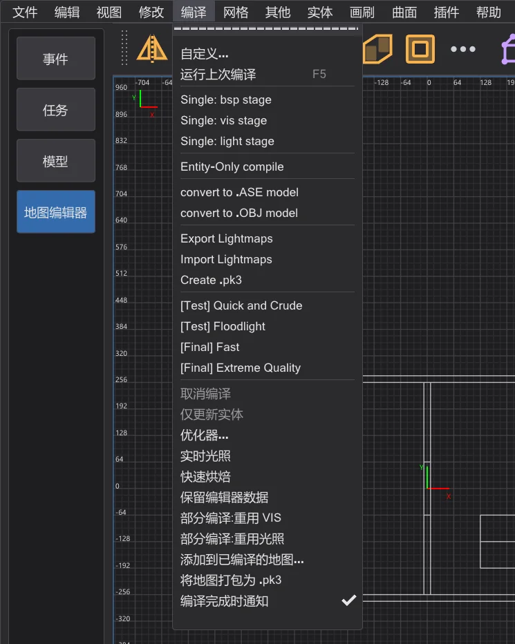
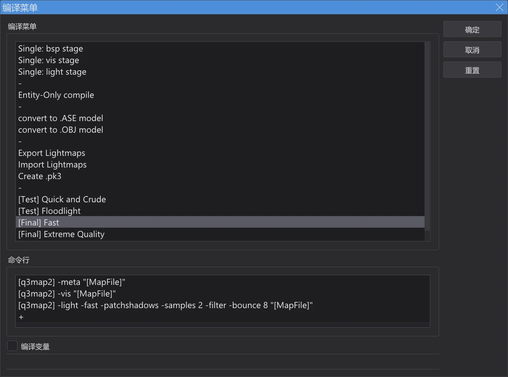
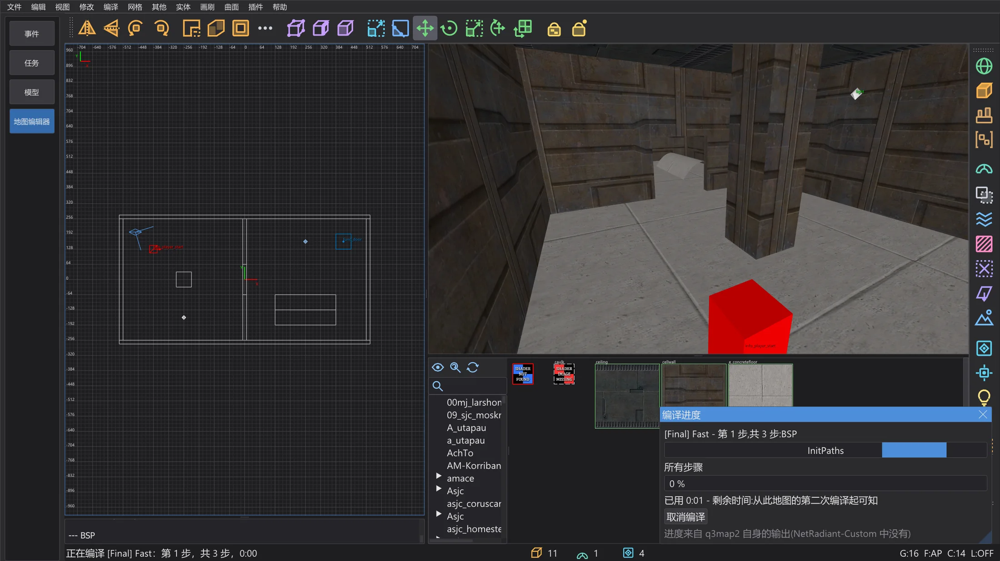
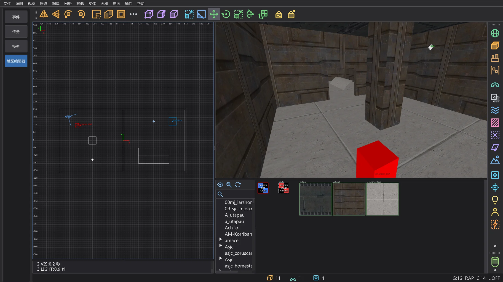
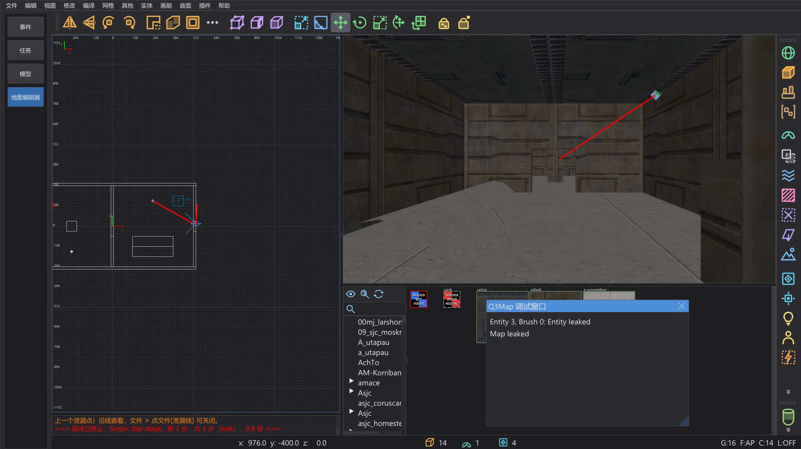
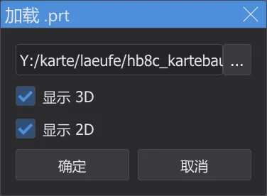
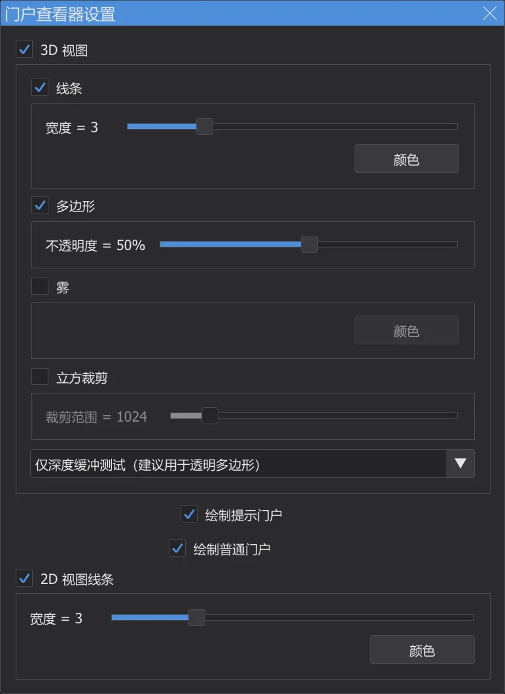
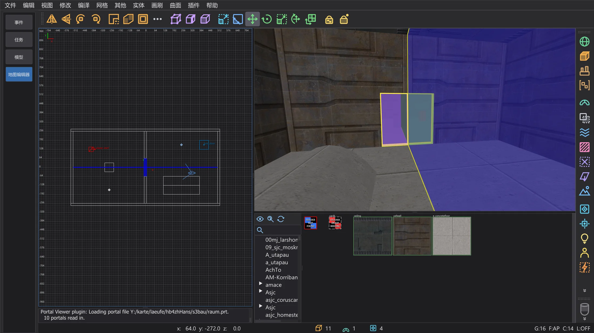
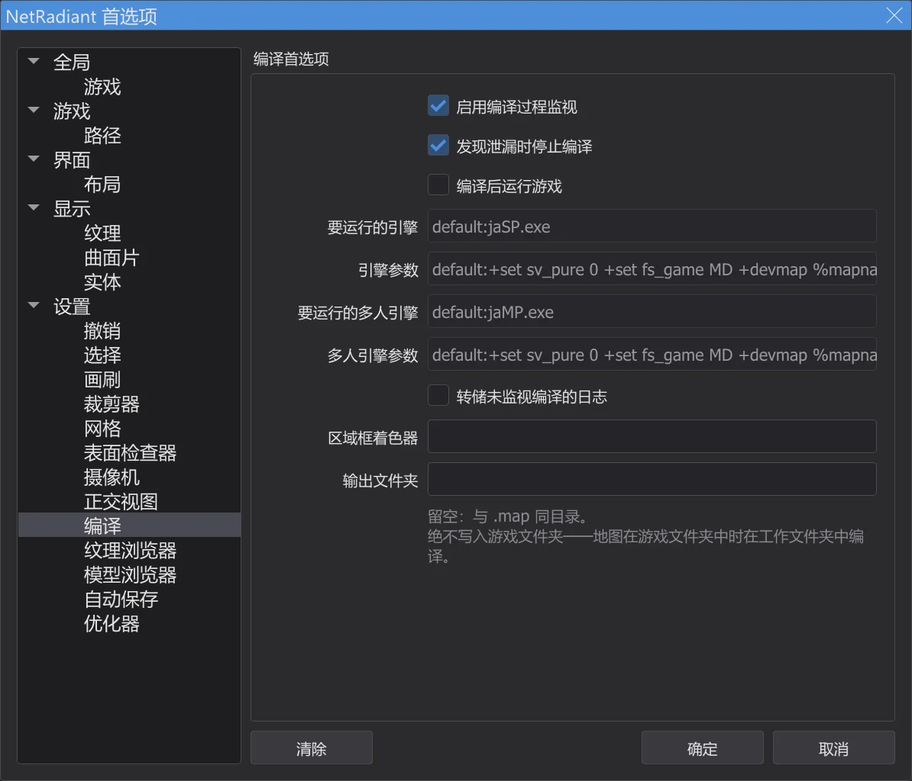

地图编辑器:编译地图
在 编译 菜单中用 q3map2 把地图编译成可游玩的 .bsp:它在后台运行,输出显示在控制台中;泄漏显示为红线,也可以显示门户;它从不写入游戏文件夹。
⟦编译⟧ 菜单#

每个菜单项对地图执行一条或多条 q3map2 命令。地图编译器 bhed_q3map2.exe 就是 NetRadiant-Custom 的 q3map2,随程序一起编译,放在 behaved.exe 旁边,结果完全相同。运行上次编译(F5)重复上一项。自定义 打开 编译菜单 对话框:可以添加菜单项和命令(双击 +)、改名、拖动排序(按住 Ctrl 复制)和删除;编译变量 显示 [MapFile]、[q3map2] 等变量。关闭地图编辑器时保存菜单。

三个阶段#
| 阶段 | 作用 |
|---|---|
BSP(-meta) | 把笔刷和曲面片变成 BSP 树和表面,写出 .bsp、.prt 和 .srf。如果地图不封闭,会因泄漏而停止。 |
VIS(-vis) | 计算哪些区域彼此可见,让游戏少绘制一些。需要 BSP 阶段生成的门户文件。 |
LIGHT(-light) | 把光源实体和天空的光照烘焙到光照贴图和光照网格中。 |
[Test] Quick and Crude 快速运行全部三个阶段,便于先看一眼;[Final] Fast 和 [Final] Extreme Quality 给光照应有的质量。只修改某一部分时单独的阶段很有用,例如移动光源后只运行 Single: light stage。
编译过程中#

- 1
首先保存地图(未命名的地图会询问名称)。设置了区域时,只编译该区域(
<地图>.reg)。 - 2
q3map2 无窗口启动,并像 NetRadiant-Custom 一样通过本地连接回报。警告显示为黄色,错误显示为红色;出错时停止其余步骤。
- 3
你可以继续工作——四处查看、选择、编辑。编译 > 取消编译 结束 q3map2。
- 4
最后一行显示菜单项、步骤数和用时;如果 q3map2 的返回值不是 0,也会显示。

运行 [Final] Fast 后的控制台。

junk.txt。查找泄漏#

地图内部必须被笔刷完全封闭。如果 q3map2 找到从某个实体通往虚空的路径,BSP 阶段会以 MAP LEAKED(红色)停止,泄漏线以红色显示在二维视图和摄像机中。Q3Map 调试窗口 列出泄漏起点的实体——单击即可选中它。
| Ctrl+Shift+K | 下一个泄漏点:摄像机和二维视图移到线上的下一个点,沿线看去 |
| Ctrl+Shift+L | 上一个泄漏点:回到上一个点 |
沿着线走,直到它离开地图——洞就在那里。把它堵上再编译一次。文件 > 点文件(泄漏线) 关闭或打开这条线(读取 <地图>.lin);保存地图时线会消失。
显示门户#




门户是 VIS 阶段计算时使用的区域之间的开口。插件 > prtview > Load .prt file 加载上次 BSP 阶段的门户文件(显示 3D、显示 2D):在摄像机中,每个门户是一个带轮廓的彩色半透明多边形,在二维视图中是一条蓝线。玩家视野很远的地方如果有许多小门户,地图会变慢——提示笔刷和细节笔刷可以改善。Configure Portal Viewer 设置颜色、线宽、不透明度、雾和裁剪立方体;Toggle portals (3D)/(2D) 和 Unload .prt file 切换显示。

文件放在哪里#

.bsp 和其他文件写在 .map 旁边,与 NetRadiant-Custom 相同。编译 页上的 输出文件夹 可改为写入你选择的文件夹(地图会复制到那里再编译)。程序从不写入游戏文件夹:如果地图或输出文件夹位于游戏文件夹中,就在设置文件夹里的工作文件夹中编译,并在控制台中说明。
在游戏中测试#
- 1
把编译好的
<名称>.bsp复制到游戏的maps文件夹,例如GameData\base\maps(使用模组时复制到模组文件夹,如MD\maps)。地图编辑器不会自己复制——它从不写入游戏文件夹。 - 2
自己启动游戏,用 Shift+~ 打开控制台,输入
devmap <名称>(不带.bsp)。devmap还允许使用noclip、god等作弊命令四处查看。 - 3
下次编译后,再复制一次
.bsp,再输入一次devmap <名称>——游戏会加载新版本。
+devmap <名称> 启动游戏——此时 .bsp 必须已经位于游戏会搜索的文件夹中。AutoCaulk#
画刷 > 自动填缝所选(F4)给所选笔刷中从内部看不到的每个面赋予 caulk 纹理——表面更少,地图更快。把摄像机放在所选范围内;由 q3map2 判断哪些面被遮住。一次撤销即可恢复。